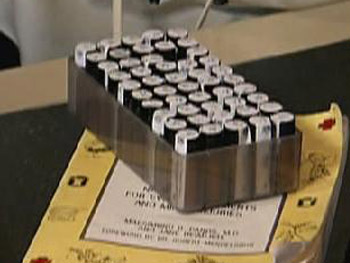

|
|
|
|
|
|
|
|
|
|
 |
|
|
|
|
|

as the voice of all professional homeopaths
in North America..."
NASH News and Events
January 28, 2009
Homeopathic Community Suffers a Great LossMichael Quinn, owner of Hahnemann Labs in San Rafael, California, died Wednesday, January 28, 2009 after suffering a sudden, massive stroke. He was surrounded by family and passed peacefully. Our thoughts are with his family.
January, 2009
Submission to www.change.gov
I am Manfred Mueller, professional homeopath and president of the North American Society of Homeopaths, a bi-national professional trade organization of certified homeopaths, with members in the United States and Canada. Homeopathy is a safe and effective health care method that dates back more than two hundred years. It is practiced worldwide and was once a mainstream medical practice in this country: At the turn of the 20th century, 12 percent of American medical practitioners were homeopaths, and there were 20 homeopathic medical colleges and more than 100 homeopathic hospitals in the United States.
In order to improve and cut the cost of health care, our government needs to look beyond the services provided by industrial medicine. There are many other alternative therapies that could improve our nation’s health. A widely cited study by Dr. David Eisenberg has found that consumers continue to count on these services in spite of economic set backs and pay for them out of pocket. The White House Commission on Complementary and Alternative Medicine under the Clinton Administration has recommended that that governments create legislation that facilitates the practice of these therapies across the Unites States.]
Though our member homeopaths have practiced their occupation safely for decades and have helped millions to improve their health and reduce their healthcare costs, the legal uncertainty of complementary and alternative provision of health care in the absence of statutory regulation seriously threatens consumer access to these alternative therapies. As it stands, healers and healthcare practitioners who practice their profession can be charged criminally in most states for practicing medicine without a license. This reduces most of these highly trained practitioners to mere private health consultants unable to offer the services they are trained for.
We need new legislation, such as a Model State Health Freedom Act to facilitate the passage of safe harbor exemption laws that protect the right of Americans to access non-medical health care practitioners who are practicing safely in the public domain without occupational licensing, such as natural, complementary, or alternative forms of healing, homeopathy, herbalism, massage and bodywork, and naturopathy, to enable these practitioners to continue to practice without being criminally charged for practicing medicine without a license. Six states already have passed, and 22 more states have introduced these measures. Additionally we need legislation that expressly affirms the right of homeopaths to practice their occupation in the states and provinces within the guidelines of its profession and protects consumer access to this tried and true health care method. Ontario has recently created such legislation. I believe the time has come to guarantee consumers the freedom of access to health care services of their choice in all states and provinces.
Let us enact this change now!
December, 2008
NASH Foundation
NASH Foundation Fundraiser
Please consider making a tax-free donation to the NASH Foundation sponsored fundraiser for a wonderful project spearheaded by Registered member, Carol Boyce. Carol is combining her filmmaking skills with her homeopathic background to create a series of broadcast quality films showing the amazing potential of homeopathy. The first, SAVING A LOST GENERATION, is about autism and shows the incredible transformations that homeopathic treatment can bring to families struggling with this rising epidemic. Donations can be made by check or through PayPal on the website at http://savingalostgeneration.com/.. Send checks to NASH Foundation, PO Box 450039, Sunrise, FL 33345-0039.
6/11-13/2010
NASH Symposium
NASH Announces Toronto Symposium in 2010
We are very excited to announce our first-ever NASH Symposium, Strategies and Techniques in the Treatment of Difficult Cases, to be held June 11-13, 2010 in Toronto, Canada at Victoria College at the University of Toronto. The Symposium will offer an in-depth look at the strategies and techniques through the presentation of cured cases. Stay tuned for details. We hope you will make plans to attend. The University’s downtown location in one of Canada’s premier cities during the beautiful summer season make this an ideal vacation destination. For information on presenting, please read the call for papers.
August, 2008
The Work of the North American Society of Homeopaths.
by Manfred Mueller, RSHom(NA), CCH
10/30/07
Cindy's Kit

Cindy Crawford was a guest on the Oprah Show. According to the show's website, Cindy plays many roles at home—wife, mother and even doctor! That's why she never leaves home without a natural first aid kit. "I'm a big fan of homeopathy. If I have the kids, for sure I always take this with me—bee stings, mosquito bites, bruises" she says. And she never forgets her homeopathic bible, Homeopathic Medicine at Home by Maesimund B. Panos.
10/25/07
International Homeopathic Debate
University of Connecticut
A Debate: Homeopathy - Quackery Or A Key To The Future of Medicine? Rustum Roy, Iris Bell,Andre Saine, and three professional quackbusters were in this televised debate.
Roy is a material scientist and has conducted research on the properties of water.
Iris Bell has conducted several studies on homeopathic treatment.
Click to see Roy's or Bell's part of the debate or see the whole debate.
05/24/07
MESSAGE FROM THE NATIONAL CENTER FOR HOMEOPATHY
Dear NASH Board,Thank you for your words of congratulations and for all your efforts on behalf of sustaining a joint conference. I am certain that tending to community is crucial to the stability of the "network" of homeopathy. It is in our mutual best interest to present a unified front in all areas/events that we represent and to maintain the understanding that homeopathy is a heterogeneous mixture ..just like the nature of water. This reference is made in the context of the latest webcast from NCH which presented the groundbreaking research by Rustum Roy on the nature of water and its potential for explaining a mechanism of action for the remedy. Dr. Iris Bell, member of NCH and eminent researcher in her own right on the complex network systems theory added the homeopathic potential to the webcast. It was attended by over 200 members of the scientific community and the feedback was amazingly positive. This type of scientific/integrative experience is crucial to the future of healthcare where understanding and communication is of paramount importance. When we all speak the same language, cooperation is easier. This webcast will be made available in hard copy on the NCH website in the near future. Please visit our new website which has recently won The Natural Health Journals award for excellence.
I invite all NASH members to join with us at The National Center for Homeopathy and avail yourselves of the opportunites of information, dialogue, networking and collaborative effort . I am eager to add new voices, thoughts and enthusiasm to our center. I am proud of the accomplishments of NASH and continue to support it both as a member and as a practitioner. While on the nominating commitee of NCH I had the distinct pleasure of nominating both Amy Lansky and Ann Jerome Croce to our Board of Directors. The National Center is inclusive of all the voices of homeopathy and, I personally, would love to hear them all. I would love your input in our magazine, Homeopathy Today, as well as timely contributions to our e-newsletter and acting as a host on our monthy chats.
I recently attended Donna Karan's UrbanZen initiative in NYC. This was a 10 day think tank for ideas as to how to incorporate alternative healing into mainstream medicine. Homeopathy was not represented! It is only through numbers and unification that we will be heard and have an opportunity to place our beloved system of healing into the hands of the people. Please join us at the NCH.
Lastly, come visit me at our next joint conference in Rhode Island and we can chat!
All blessings,
Nancy GahlesDr. Nancy Gahles
Doctor of Chiropractic (DC)
Certified Classical Homeopath ( CCH)
Registered, Society of Homeopaths, North America ( RSHom, NA)
Executive Director, Health & Harmony Wellness Education
President, National Center for Homeopathy
Expert: Ask The Experts, Mothering magazine, Natural Medicine.com
Columnist: The Wave newspaper, Homeopathy Today
Ordained Interfaith Minister
Vis-a-Vis Technologies.